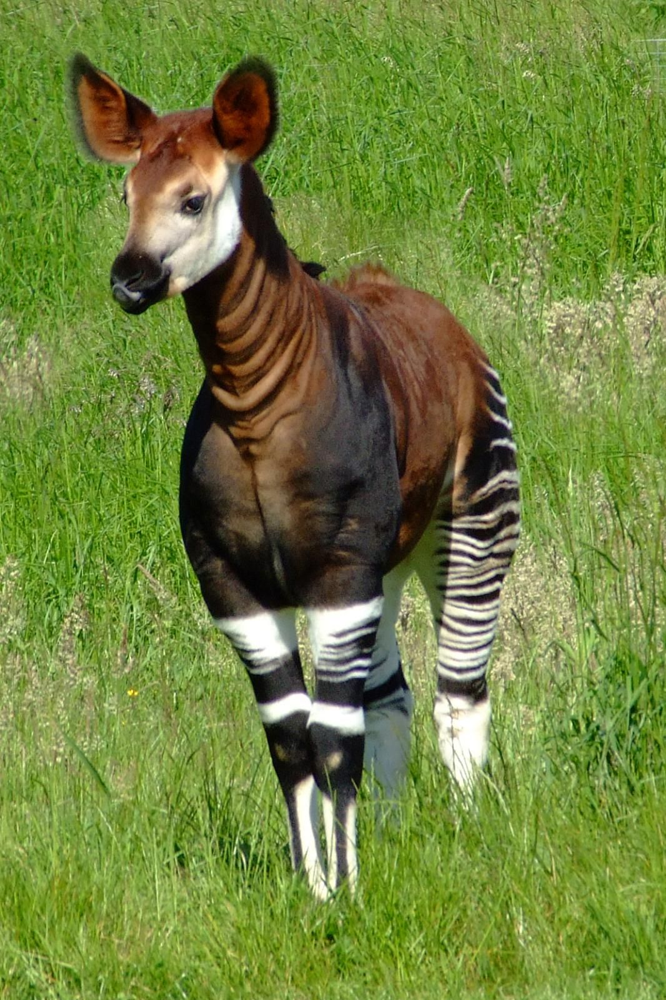

Необычные животные
Список необычных жтвотных

Красная панда — небольшое млекопитающее с густой рыжей шерстью. Её мордочка украшена светлыми отметинами, а лапы и нижняя часть тела имеют тёмную окраску. Длинный пушистый хвост с кольцами помогает сохранять равновесие при передвижении по ветвям.
Красная панда обитает в горных лесах Азии, в том числе в Гималаях и на юго-западе Китая. Она предпочитает прохладные леса с густыми зарослями бамбука. Деревья служат ей местом отдыха и укрытием от опасности.
Основу рациона красной панды составляют листья и молодые побеги бамбука. Она также может поедать плоды, насекомых и другую пищу. Передние лапы помогают ей удерживать стебли во время еды.
Красная панда относится к отряду хищных, однако питается преимущественно растениями. Название отряда отражает родственные связи животных, а не только их рацион.
Красные панды обычно живут поодиночке. Наиболее активны они в сумерках и ночью, а днём часто отдыхают на деревьях. Острые полувтяжные когти помогают им цепляться за кору и уверенно лазать по ветвям.
В холодную погоду красная панда сворачивается и прикрывается пушистым хвостом. Густая шерсть, в том числе на подошвах лап, помогает сохранять тепло.